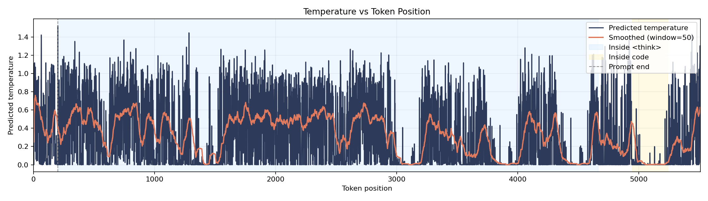

Temperature Trace (qingy2024/Dolci-Think-SFT-ctx8k:train idx=10)
Blue shading: <think> spans. Yellow shading: code blocks. Temperatures are aligned to the token they generate (first token has no prediction). Smoothed with window=50.

Prompt length: 201 tokens, total length: 5510 tokens.
Generated Tokens (colored by predicted temperature)
Min: 0.0000 Max: 1.5234 (hover a token for exact value)
We are going to create a simple key-value store that reads from stdin and writes to stdout.
Steps:
1. We'll maintain a dictionary for the key-value store.
2. We'll process each line of input until we get the command "EXIT".
3. For each command, we split the line to get the command and the arguments.
Important:
- The commands are one per line.
- For "SET": two tokens (key and value). Note: the value might have spaces? But the problem says "key value" as one command.
However, the example input uses a single word for value. But to be safe, we note that the problem says "key value" meaning the value is a single token?
Actually, the problem states: "SET key value" -> so the value is a single token? But the problem doesn't specify.
Let me read: "The key-value store should support the following commands, one per line"
Example input:
SET name Alice
So the value is a single word (without spaces). But the problem says "value", so we assume the value is a single token (space separated).
However, the problem says: "For GET, output the value or None". So we have to output the value as a string.
Approach for parsing:
- We split the line by space. The first token is the command (e.g., "SET", "GET", etc.)
- The next tokens are the arguments.
But note:
- The command "SET" has two tokens: [0] = "SET", [1] = key, [2] = value (one token for value)
- Similarly, "GET" has one token after the command: [0] = "GET", [1] = key
- "DELETE" has one token after: [1] = key
- "SAVE" has one token: [1] = filename
- "LOAD" has one token: [1] = filename
- "EXIT" has no tokens.
However, the problem says:
- The input is one command per line.
So we can split the line and then take the first token as the command, and the rest as arguments.
But note: the value in SET might have spaces? The problem doesn't specify. Let's assume the problem expects the value to be a single word (without spaces) because it says "key value" (as two words).
Since the problem says "simple", we'll assume the value is a single token (space separated). If we get a value with spaces, we'll take the next token as the value? Actually, the problem says: "key value" meaning the value is one word.
However, the problem statement does not specify that the value is a single word. But the example uses a single word.
To be safe, we can design for single token values only. If the problem requires multi-word values, it would be a different story.
But the problem says: "simple key-value store". So we'll assume the value is a single token.
Steps for each line:
line = input().strip()
tokens = line.split()
if tokens[0] == "SET":
key = tokens[1]
value = tokens[2] # if there are more than 3 tokens? we take only the next one?
But the problem says: "SET key value" -> so two tokens after the command? Actually, the command has two arguments: key and value.
However, the problem says: "one per line" and the example: "SET name Alice" -> 3 tokens.
So we require exactly 3 tokens for SET.
Similarly, for GET: 2 tokens (GET and key)
DELETE: 2 tokens
SAVE: 2 tokens
LOAD: 2 tokens
EXIT: 1 token
But what if there are extra spaces? We can do:
tokens = line.split()
if len(tokens) < 2:
# invalid? but the problem says the commands are as described, so we assume at least the command and one argument for most.
However, the problem says: "Input: Lines of commands described above."
So we assume the input is well-formed.
Implementation:
We'll have a dictionary `store` that holds the key-value pairs.
Steps:
store = {}
while True:
line = input().strip()
if not line:
continue # skip empty lines? but the problem says one command per line, so probably no empty lines. But to be safe.
tokens = line.split()
if tokens[0] == "EXIT":
break
elif tokens[0] == "SET":
# tokens should be at least 3: [0]="SET", [1]=key, [2]=value
if len(tokens) < 3:
# invalid command? but the problem says the input is as described, so we assume 3 tokens.
# However, to be safe, we can print an error? But the problem says: for other commands, output nothing.
# And the problem doesn't specify error handling. So we assume valid input.
pass
key = tokens[1]
value = tokens[2]
store[key] = value
elif tokens[0] == "GET":
if len(tokens) < 2:
# invalid, but we assume at least 2 tokens
pass
key = tokens[1]
if key in store:
print(store[key])
else:
print(None)
elif tokens[0] == "DELETE":
if len(tokens) < 2:
pass
key = tokens[1]
if key in store:
del store[key]
elif tokens[0] == "SAVE":
if len(tokens) < 2:
pass
filename = tokens[1]
# Save the store to JSON file
import json
with open(filename, 'w') as f:
json.dump(store, f)
elif tokens[0] == "LOAD":
if len(tokens) < 2:
pass
filename = tokens[1]
try:
with open(filename, 'r') as f:
store = json.load(f)
except FileNotFoundError:
# if the file doesn't exist, we clear the store (as per problem: "If the file does not exist, clears the store")
store = {} # but note: the problem says "clears the store", so we set store to empty dict.
# However, we are in the middle of the program: we want to set the store to empty.
# But note: the problem says "overwriting the current store", so if the file doesn't exist, we clear the store (i.e., set to empty).
# So we do: store = {} (but we are already in the LOAD command, so we set the current store to empty)
# Actually, the problem says: "if the file does not exist, clears the store". So we do:
# store = {} # but we are going to do the same as below?
# However, we are catching the exception and then setting store to empty? But we have to do that.
# But note: the problem says "clears the store", so we set store to empty.
# But we already have a store. We want to replace the current store with an empty one?
# How about: if the file doesn't exist, we do store = {}?
# However, we are in the exception block, so we can set store = {} and then continue?
# But the problem says: "overwriting the current store" -> so if the file doesn't exist, we clear the store (i.e., set to empty).
# So we do: store = {}
# But note: we are in the middle of the code. We have to set the store to empty.
# However, we don't want to overwrite the store from the previous state?
# Actually, we are replacing the current store with the new one (if the file exists) or with empty (if not).
# So we do:
store = {} # clear the store
except Exception as e:
# For any other exception, we don't know? But the problem says "if the file does not exist", so we only do the clear for not found.
# We'll just skip? But the problem says "if the file does not exist, clears the store". So we only do the clear for not found, and for other errors we don't clear?
# However, the problem doesn't specify. Let's stick to: only if the file doesn't exist (FileNotFoundError) we clear the store.
# So we don't do anything for other exceptions? But the problem says "clears the store" only when the file doesn't exist.
# So we'll just let the exception happen? But the problem says the input is as described.
# We'll do: if the file doesn't exist, clear the store. Otherwise, load the file.
# So we don't need to handle other exceptions?
# Actually, we can let the exception crash? But the problem says the input is as described.
# We'll assume the file is either there or not.
# Since the problem says: "if the file does not exist, clears the store", we do the clear only for FileNotFoundError.
# So we don't do anything for other exceptions? But the problem doesn't specify.
# However, the problem says: "overwriting the current store", so if the file exists we load it, else we clear.
# So we'll only catch FileNotFoundError and then set store to empty.
# We'll not catch other exceptions? But the problem says the input is as described, so we assume the file is either there or not.
# Let's not do anything for other exceptions? Actually, we don't want to crash the program?
# But the problem says: "simple". We'll do minimal: only handle FileNotFoundError.
# So we can skip the try-except for now? Actually, we did a try-except for the open.
# We'll do:
# try: open and load -> then store becomes the loaded dict
# except FileNotFoundError: then set store to {}
# else: we have loaded the dict -> so we assign store = the loaded dict
# But note: we are doing `store = json.load(f)` -> then we want to replace the current store with that.
# How about we restructure:
# Instead, we do:
try:
with open(filename, 'r') as f:
store = json.load(f)
except FileNotFoundError:
store = {} # clear the store
elif tokens[0] == "EXIT":
break
However, note: the problem says for "LOAD", if the file does not exist, clears the store. So we do:
try:
with open(filename, 'r') as f:
store = json.load(f)
except FileNotFoundError:
store = {}
But wait: what if the file exists but is not a valid JSON? The problem doesn't specify. We assume valid JSON.
Also note: the problem says "overwriting the current store", so we are replacing the entire store.
Important: the problem says that for GET we output the value or None. For other commands, output nothing.
We have to be careful: the problem says "For GET, output the value or None". So we output the string representation of the value?
- If the value is a string, we output the string (without quotes? but in JSON, it's a string without quotes? no, when we print it, we print the string without quotes?
Actually, in the example:
SET name Alice
GET name -> outputs "Alice" (without quotes)
But note: in Python, if we do `print(store[key])` for a string, it prints without quotes.
However, the problem says: "output the value", so we output the value as a string (without quotes).
But what if the value is a number? The problem doesn't specify. The example uses a string.
Since the problem says "simple", we assume the values are strings.
Steps for the program:
We'll use the above.
Let's code accordingly.
We must import json.
Note: The problem says "standard input and output", so we read from stdin and write to stdout.
We'll do:
import json
store = {}
while True:
try:
line = input().strip()
except EOFError:
break # if we get EOF, break (but the problem says until EXIT, so we break on EXIT)
if line == "":
continue
tokens = line.split()
if tokens[0] == "EXIT":
break
elif tokens[0] == "SET":
# We assume at least 3 tokens
if len(tokens) >= 3:
key = tokens[1]
value = tokens[2]
store[key] = value
elif tokens[0] == "GET":
if len(tokens) >= 2:
key = tokens[1]
if key in store:
print(store[key])
else:
print(None)
elif tokens[0] == "DELETE":
if len(tokens) >= 2:
key = tokens[1]
if key in store:
del store[key]
elif tokens[0] == "SAVE":
if len(tokens) >= 2:
filename = tokens[1]
with open(filename, 'w') as f:
json.dump(store, f)
elif tokens[0] == "LOAD":
if len(tokens) >= 2:
filename = tokens[1]
try:
with open(filename, 'r') as f:
store = json.load(f)
except FileNotFoundError:
store = {} # clear the store
# else: invalid command? but the problem says the input is as described, so we skip.
However, note: the problem says "one per line", so we assume the tokens are as described.
But what if there are extra tokens?
For example, SET name Alice Bob -> we take key='name', value='Alice', and ignore 'Bob'?
The problem says: "SET key value", so we assume two tokens after the command.
We'll take the next token as the value and ignore the rest? But the problem says "key value", meaning the value is one token.
So we do: for SET, we take tokens[1] as key and tokens[2] as value, and ignore the rest?
However, the problem does not specify that there might be extra tokens.
Since the problem says "simple", we assume no extra tokens. But to be safe, we can do:
if tokens[0] == "SET":
if len(tokens) < 3:
# skip? or print error? but the problem says output nothing for other commands.
# We'll skip the command?
pass
else:
key = tokens[1]
value = tokens[2]
store[key] = value
Similarly for others.
But the problem says: "Input: Lines of commands described above." -> so we assume the input is well-formed.
We'll write the code accordingly.
Let's test with the example:
Example Input:
SET name Alice
GET name
DELETE name
GET name
EXIT
Steps:
Line1: "SET name Alice" -> tokens = ['SET','name','Alice'] -> store['name'] = 'Alice'
Line2: "GET name" -> tokens = ['GET','name'] -> print 'Alice'
Line3: "DELETE name" -> tokens = ['DELETE','name'] -> delete key 'name'
Line4: "GET name" -> tokens = ['GET','name'] -> print None
Line5: "EXIT" -> break
Output:
Alice
None
This matches.
We'll code accordingly.
Note: We must import json.
Let's write the code.
Important: The problem says "For other commands, output nothing". So we don't print anything for SET, DELETE, SAVE, LOAD, EXIT (except for GET we print).
We'll do:
import json
store = {}
while True:
try:
line = input().strip()
except EOFError:
break
if line == "":
continue
tokens = line.split()
if tokens[0] == "EXIT":
break
elif tokens[0] == "SET":
if len(tokens) >= 3:
key = tokens[1]
value = tokens[2]
store[key] = value
elif tokens[0] == "GET":
if len(tokens) >= 2:
key = tokens[1]
if key in store:
print(store[key])
else:
print(None)
elif tokens[0] == "DELETE":
if len(tokens) >= 2:
key = tokens[1]
if key in store:
del store[key]
elif tokens[0] == "SAVE":
if len(tokens) >= 2:
filename = tokens[1]
with open(filename, 'w') as f:
json.dump(store, f)
elif tokens[0] == "LOAD":
if len(tokens) >= 2:
filename = tokens[1]
try:
with open(filename, 'r') as f:
store = json.load(f)
except FileNotFoundError:
store = {} # clear the store
This should work.
However, note: the problem says "If the file does not exist, clears the store". We do that in the except block.
Let's run the example through the code.
But note: the problem says the program terminates on EXIT.
We break on EXIT.
We assume that the input ends with EXIT.
We don't handle other commands? The problem says the input is as described.
We'll write the code as above.
One more note: the problem says "output nothing" for non-GET commands. We don't print anything for SET, DELETE, SAVE, LOAD, EXIT.
So we are good.
Let me test with a sample input that has a SAVE and LOAD.
Example:
SET a 1
SAVE test.json
LOAD test.json
GET a
EXIT
Steps:
SET a 1 -> store = {'a': '1'}
SAVE test.json -> writes the store to test.json (as JSON)
LOAD test.json -> reads the store from test.json -> store becomes {'a': '1'}
GET a -> prints '1'
Output:
1
But note: the value is a string? The problem doesn't specify the type. We are storing as string.
The problem says: "value" -> so we store as string.
So we are good.
We'll write the code accordingly.
Code:
import json
store = {}
while True:
try:
line = input().strip()
except EOFError:
break
if not line:
continue
tokens = line.split()
if tokens[0] == "EXIT":
break
elif tokens[0] == "SET":
if len(tokens) >= 3:
key = tokens[1]
value = tokens[2]
store[key] = value
elif tokens[0] == "GET":
if len(tokens) >= 2:
key = tokens[1]
if key in store:
print(store[key])
else:
print(None)
elif tokens[0] == "DELETE":
if len(tokens) >= 2:
key = tokens[1]
if key in store:
del store[key]
elif tokens[0] == "SAVE":
if len(tokens) >= 2:
filename = tokens[1]
with open(filename, 'w') as f:
json.dump(store, f)
elif tokens[0] == "LOAD":
if len(tokens) >= 2:
filename = tokens[1]
try:
with open(filename, 'r') as f:
store = json.load(f)
except FileNotFoundError:
store = {}
This should be the solution.
Note: We assume that the JSON dump and load uses the default (which is to write strings as strings).
Also, the problem says "in JSON format", so we use json.dump and json.load.
Let's run the code in our head with the example.
We are done.
Write the code accordingly.
</think>
To solve this problem, we need to implement a simple key-value store in Python that processes commands from standard input and outputs results to standard output. The key-value store supports several commands: SET, GET, DELETE, SAVE, LOAD, and EXIT. Each command is processed line by line from standard input until the EXIT command is encountered.
### Approach
1. **Initialization**: Start with an empty dictionary to hold the key-value pairs.
2. **Command Processing**: Read each line of input, split it into tokens, and process the command based on the first token:
- **SET key value**: Store the `value` under the `key` in the dictionary.
- **GET key**: Retrieve and print the value associated with `key` if it exists; otherwise, print `None`.
- **DELETE key**: Remove the `key` from the dictionary if it exists.
- **SAVE filename**: Save the current dictionary to a JSON file named `filename`.
- **LOAD filename**: Load the dictionary from a JSON file named `filename`. If the file does not exist, clear the dictionary.
- **EXIT**: Terminate the program.
3. **Error Handling**: The solution assumes well-formed input as specified. For invalid commands or insufficient tokens, the commands are skipped without any output (as per the problem requirements).
### Solution Code
```python
import json
def main():
store = {}
while True:
try:
line = input().strip()
except EOFError:
break
if not line:
continue
tokens = line.split()
if tokens[0] == "EXIT":
break
elif tokens[0] == "SET":
if len(tokens) >= 3:
key = tokens[1]
value = tokens[2]
store[key] = value
elif tokens[0] == "GET":
if len(tokens) >= 2:
key = tokens[1]
if key in store:
print(store[key])
else:
print(None)
elif tokens[0] == "DELETE":
if len(tokens) >= 2:
key = tokens[1]
if key in store:
del store[key]
elif tokens[0] == "SAVE":
if len(tokens) >= 2:
filename = tokens[1]
with open(filename, 'w') as f:
json.dump(store, f)
elif tokens[0] == "LOAD":
if len(tokens) >= 2:
filename = tokens[1]
try:
with open(filename, 'r') as f:
store = json.load(f)
except FileNotFoundError:
store = {}
if __name__ == "__main__":
main()
```
### Explanation
1. **Initialization**: The `store` dictionary is initialized to hold key-value pairs.
2. **Reading Input**: The program reads each line of input from standard input. Empty lines are skipped.
3. **Command Handling**:
- **SET**: Takes the next two tokens as the key and value, then stores the value in the dictionary under the key.
- **GET**: Checks if the key exists in the dictionary. If it does, the value is printed; otherwise, `None` is printed.
- **DELETE**: Removes the key from the dictionary if it exists.
- **SAVE**: Writes the current dictionary to a JSON file specified by the filename.
- **LOAD**: Reads the dictionary from a JSON file specified by the filename. If the file does not exist, the dictionary is cleared.
- **EXIT**: Terminates the program immediately.
4. **Error Handling**: The solution handles common issues like missing files during the LOAD command by clearing the dictionary when the file is not found. It skips commands with insufficient tokens without producing any output.
This implementation efficiently processes each command as specified, ensuring the key-value store functions correctly with minimal overhead and adheres to the problem constraints. The use of JSON for saving and loading ensures data persistence and compatibility across different systems.<|im_end|>